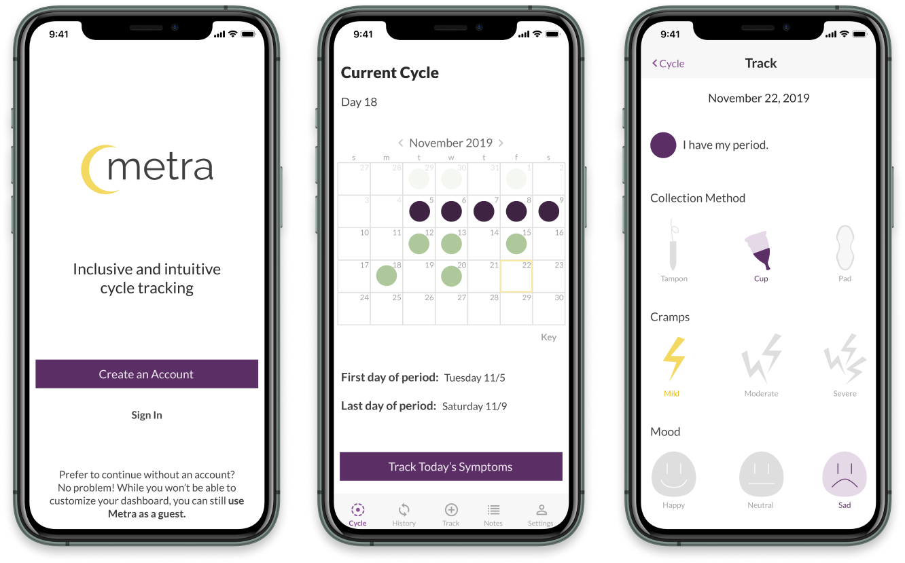

Metra
Gender-inclusive menstrual cycle tracking
Summary
Metra is a menstrual cycle tracking app that is gender-inclusive and intuitive to use. With Metra, users can customize their tracking options, track symptoms, and take notes about their cycle and general health and wellbeing.
Roles
- UX design
- Branding
- Visual design
Deliverables
- Sketches
- Wireframes
- Logo
- Style guide
- High-fidelity mockups
- Clickable prototype
Tools
- Sketch
- InVision
- Maze
- UsabilityHub
The Problem
Billions of people worldwide menstruate, but digital tools for menstrual cycle tracking leave a lot to be desired for many users. The experiences of transgender, non-binary, and gender nonconforming individuals in particular are often overlooked. Existing products predominantly center the experiences of cisgender women who menstruate. As a result, they often make assumptions about user goals or behaviors that can be alienating or cause feelings of dysphoria for users who do not identify as cis women.
The Solution
Metra is a gender-inclusive cycle tracking app that gives users the option to customize their cycle tracking experience to meet their own unique needs. Metra doesn’t make assumptions about users based on their presumed gender identity and addresses the need for a customizable digital tracking tool for anyone who wants to record data about their cycle.
Competitive Analysis
I kicked off my research by conducting a competitive analysis of four existing menstrual cycle tracking applications: Clue, Flo, Groove, and Period. All four apps give users the ability to track their periods, but they differ significantly in the number of users they reach and the features they offer.
Clue

Strength
- Doesn’t use gendered language or stereotypically feminine visuals
Weakness
- Dashboard looks cluttered when many symptoms are tracked
Flo

Strength
- Most popular period-tracking app with 30M active users
Weakness
- Visual design, branding, and iconography is very feminine
Groove

Strength
- Visual design and branding is muted and gender neutral
Weakness
- Limited ability to customize what is tracked
Period

Strength
- Can be used without creating an account
Weakness
- Limited tracking (only menstrual flow and oral contraceptives)
Clue
Strength
- Doesn't use gendered language or stereotypically feminine visuals
Weakness
- Dashboard looks cluttered when many symptoms are tracked
Flo
Strength
- Most popular period-tracking app with 30M active users
Weakness
- Visual design, branding, and iconography is very feminine
Groove
Strength
- Visual design and branding is muted and gender neutral
Weakness
- Limited ability to customize what is tracked
Period
Strength
- Can be used without creating an account
Weakness
- Limited tracking (only menstrual flow and oral contraceptives)
Despite the prevalence of period-tracking apps, a new competitor could find success in the market with the right focus on inclusivity and the right combination of features.
A new app should take into account the varied experiences of people who menstruate and should acknowledge this diversity of experience with more customizable features.
User Survey
Following the competitive analysis, I conducted a survey to learn more about users’ current and past experiences with existing cycle tracking apps. I received a variety of responses from women and non-binary participants.
Key Findings
The survey revealed that user priorities when it comes to tracking apps include simplicity and an ability to customize the product to meet their needs.
“I like it simple and clean and educational.”
“I would like more inclusive language/tracking options (don't refer to users as women or female by default).”
“Allow me to track sex without making heteronormative assumptions.”
“Convenience of entering my period start date is all I am looking for. The easier the better.”
User Personas
The information gained from the survey informed the creation of three personas that are representative of potential users’ goals and frustrations with recipe management.
User Stories
Next, I wrote out user stories that represented the features that users expressed a desire for in a cycle tracking app.
I prioritized the stories based on information learned from the user survey, and came up with 5 high priority stories that represented the core features of the project’s minimum viable product.
As a user, I want to...
- create a secure account
- track menstrual flow
- customize what symptoms are tracked
- make a note about my period, symptoms, or general wellbeing
- review symptoms from a previous day or cycle
User Flows
Next, I sketched user flows to represent all of the high priority user stories to be included in the MVP.
Wireframes
I began wireframing by sketching out screens that represented all of the high priority user flows. Many screens had a few different iterations in the initial sketches in order to visualize different layouts for the main app screens.
Initial Sketches
Digital Iterations
Usability Testing
To get some initial feedback on the navigation of the app, I created a usability test with Maze. Ten participants tested the following tasks:
- Signing in to an existing account
- Tracking symptoms
- Viewing notes
- Viewing custom tracking options
All participants were able to complete the tested tasks, however, a high misclick rate indicated that testers found the main dashboard design unclear, so I reworked the layout before creating mockups of the design.
Branding
After creating my initial wireframes, I was excited to develop a brand identity for the unnamed product. I began to brainstorm names; I wanted a name that was meaningful without being overtly feminine. I began with a mind mapping exercise, and then turned to Google for some help narrowing down a name for the product.
I landed on Metra, a lesser-known synonym for uterus or womb. I discovered that it is also a word used as a unit of measurement in Ancient Greek. With its direct but discreet connection to measurement and the womb, Metra felt like a natural choice for a cycle tracking app.
The Metra brand is calming, clean, and relaxed, since menstrual cycles can be a stressor for many people. With the goals of the product and brand characteristics in mind, I created a moodboard to help inspire the visual design.
Logo
I sketched and then digitized some logo ideas. I liked the idea of using a circle as a motif in the design because of the cyclical nature of menstruation. I also liked the idea of using a moon in the logo because many people associate the menstrual cycle with the lunar cycle.
Color Palette
I approached the color palette carefully. Many period tracking and fertility awareness apps rely on a color palette that is full of pinks and pastels. There’s nothing inherently wrong with that, but I wanted to err on the side of something more neutral that would appeal to a broad range of users. I found inspiration in the nonbinary and genderqueer pride flags, and chose a palette based on purple (which is present in both flags), with green and yellow accents.
Typography
The typeface used throughout the app is Lato, a humanist sans serif typeface that works well with the welcoming vibe of the brand.
Headline Text
Lato black
ABCDEFGHIJKLMNOPQRSTUVWXYZ
abcdefghijklmnopqrstuvwxyz
1234567890
Body Text
Lato regular
ABCDEFGHIJKLMNOPQRSTUVWXYZ
abcdefghijklmnopqrstuvwxyz
1234567890
High-fidelity Mockups
With a brand identity and product name in place, I created high-fidelity mockups that represented all of the high priority user flows of the MVP.
Final Design
After the second round of usability testing, I edited the mockups to create a final prototype in InVision.
Conclusion
Designing Metra was a challenge and a learning experience for me. I set out to design a cycle tracking app that would center the needs of trans and non-binary users, rather than addressing them as an afterthought. I realized that I had a lot to learn about people’s experiences with periods, and my research led to some significant changes to my original conception of the project. Initially, I thought of it as a period tracking app, however I came to understand that a tracking app could be helpful for individuals who experience symptoms of a menstrual cycle but don’t have a period, which is fairly common.
In the future, I would like to add more features to the product that were not included in the MVP. These would include more customization options, and a pregnancy/fertility awareness mode that is not female-centric or heteronormative for users who are pregnant or trying to conceive.